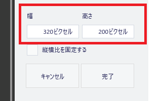

画像サイズを縮小する方法
サイトに掲載する画像サイズを縮小する場合、ペイントやPhotoshopなどのツールで「画像そのものを縮小する方法」と「CSSで縮小して表示する方法」の二つがあります。
- 画像そのものを縮小する方法
- CSSで縮小して表示する方法
■画像そのものを縮小する方法
ペイントなどで画像自体を縮小する場合、画像サイズが小さいほどデータ容量も小さくなります。ただし、縮小の仕方によっては画質が劣化することもあります。縮小する際には、必ず元画像のバックアップをして保存しておきましょう。
■CSSやimgタグで縮小して表示する方法
一方、CSSやimgタグで小さなサイズを指定する場合、元画像のサイズ自体に変化はなく、ブラウザ側で縮小して表示させるため、データ容量は変わりません。そのため、容量の大きな画像の場合、縮小して表示されたとしても通信データ量が大きくなり、サイトが重くなる可能性があります。
また、ブラウザ側で画像を縮小して表示するアルゴリズムの精度によっては、ぼやけてしまう可能性があります。縮小する際は、幅と高さのアスペクト比を保ったままで縮小しないと歪みますので注意しましょう。
ペイントで画像サイズを縮小する方法
実際の画像サイズを縮小したい場合、Windows付属ツールの「ペイント」で縦横比を維持したまま簡単に縮小することができます。
ペイントの「サイズ変更」の箇所から、「縦横比を維持する」にチェックを入れ、縮小したいサイズを入力するとよいでしょう。
この画像サイズを縮小することで画像のデータ容量も小さくなります。
あるいは、画像全体ではなく、特定の範囲を決まったサイズにトリミングして縮小したい場合、まずはあらかじめ「ペイント」にて大雑把にトリミングして縮小しておきます。その状態でWindows付属の「ペイント3D」を使い、正確なサイズを指定して切り取ることができます。
例えば、以下のような「800 × 400」のホームページのキャプ画があったとして、赤丸で囲んだあたりを「320 × 200」の大きさに正確に切り取りたいとします。
この場合、あらかじめペイントの「選択」で切り取りたい箇所を大雑把にトリミングしたのち、widthを「322」などの少し大きめのサイズを指定して縮小しておきます。
ここで一旦保存したのち、次に画像を右クリックして「プログラムから開く」→「ペイント3D」→「トリミング」を選択します。
この状態で切り取りたい正確なサイズを直接入力してトリミングを実行すればよいでしょう。

縮小した画像を実際にホームページに掲載する際は、これらの画像を圧縮したのち、データ容量を削減してから掲載することをおすすめします。
どの程度のサイズまで縮小するかについては、以下の点も考慮にいれて自サイトに合った画像サイズを選択されるとよいでしょう。
- サイトのコンテンツ幅の範囲内（※おおむね600px～800px以内）
- OGP画像の最小サイズ以上（※Facebookは200 x 200ピクセル以上）
- スマートフォンのデバイス幅以上（※320pxや375px、あるいは414px以上）
- 「記事」構造化データの推奨サイズ以上（※1200px以上）
当サイトではサイズがバラバラですが、主に「480 × 270」や「640 × 360」あたりを使用することが多いです。スマホ用に最適化する場合、デバイス幅よりも大きな画像を掲載するとはみ出てしまうため、一般的にはmax-width:100%;を使い、画像をデバイス幅まで自動で縮小させて最適化することをおすすめします。
imgタグやCSSで画像を縮小して表示する方法
■imgタグで縮小する場合
サイト上で画像を縮小して表示する場合、imgタグで「px」を設定するだけ縮小されます。
例えば、「480 × 270」の画像を半分のサイズに縮小して掲載する場合、imgタグに２分の１の「width="240" height="135"」などと指定しておけば、縦横比を保ったまま画質が歪むことなく表示されます。
<img src="/example.jpg" alt="" width="240" height="135">
このimgタグの詳細については、こちらのページをご参照ください。
→ <img src=は画像を表示するhtmlタグ
ただし、このアスペクト比についてですが、画像サイズにはこれといった決まりはないものの、一般的には「アスペクト比が 16x9、4x3、1x1 」の画像を使用することをおすすめします。
もしデジカメで撮影する場合、設定画面でアスペクト比を選択する箇所があるはずですので、撮影する時点で上記の比率になるように設定しておくと便利です。
例えば、こちらはiPhoneですが、カメラを起動して上部に表示される「∧」をタップすると以下のようなアスペクト比を選択する箇所があります。
この状態でスマホを横にして撮影すると選択したアスペクト比で撮影できます。
おおむね、どのカメラでもアスペクト比は選択できますので、「16x9、4x3、1x1」のいずれかで撮影しておき、あとはその比率を保ったまま好みの大きさに縮小して掲載すればよいでしょう。
■CSSで縮小する場合
CSSで縮小する場合、あらかじめimgタグにclass属性を埋め込んでおき、CSSにwidthとheightを指定することで縮小することができます。
例えば、上のiphoneの画像の場合、imgタグにexampleなどのクラス属性を埋め込んでおきます。
<img src="/image/iphone-aspect.jpg" width="480" height="270" class="example">
この状態で、cssには以下のように記述します。
.example {width:240px;height:135px;}
すると、このように半分に縮小して表示されます。
これを応用して、スマホで閲覧した時にだけ縮小させる場合、レスポンシブウェブデザインで以下のように指定すれば、PCでは「480 × 270」、モバイル端末では「240 × 135px」で小さく表示されます。
@media screen and (max-width:480px) {
.example {width:240px;height:135px;}
}
上記の場合、元の画像自体は高解像度のままで編集せず、imgタグやCSSで「表示のみ」を変更しているため、画質がよくなるメリットがあります。一方、画像のデータ容量については大きいままの状態のため、データ転送量が大きくなってしまうデメリットもあります。